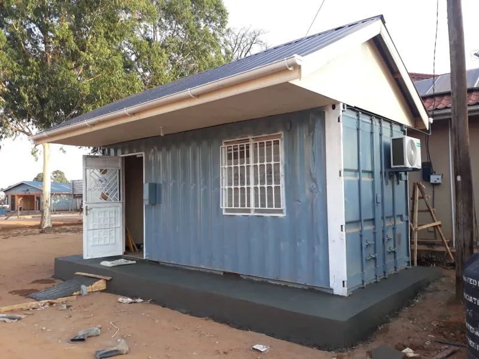

When it comes to creating your dream shipping container home, one of the key decisions you’ll face is whether or not to add a roof. While skipping the roof may save money initially, installing one can provide long-term benefits like improved insulation and energy efficiency. At Glorious Container Conversions Ltd, we believe a well-designed roof is essential for maximizing comfort and durability in your container home.
Why Add a Roof to Your Shipping Container Home?
Adding a roof to your shipping container home isn’t just about aesthetics—it’s about functionality and sustainability. A roof provides an extra layer of insulation, helping to keep your home warm in the winter and cool in the summer. It also protects your home from the elements, reducing the need for costly repairs down the line.
Roof Styles: Find Your Perfect Fit
Choosing the right roof style can transform your container home into a stylish and efficient living space. Here are three popular roof styles to consider:
Shed Roof
A shed-style roof is an excellent option for those seeking simplicity and affordability. This sloped roof is easy to construct, often completed in just a few days, and it lends itself perfectly to solar panel installations. To build a shed roof, you’ll need to:
- Install Steel Plates: Weld right-angled steel plates across the length of the container.
- Attach Wooden Beams: Secure wooden beams into the steel plates on each side.
- Fix the Trusses: Screw the trusses into the beams to form the roof’s framework.
- Add Purlins: Install purlins across the trusses for additional support.
- Ventilation: Ensure proper ventilation by overhanging the trusses and attaching fascia and soffit boards with air gaps.
Gable Roof

For a more traditional look, the gable roof is the way to go. A gable roof, distinguished by its recognizable triangular shape, provides superior water drainage and more ceiling space. The construction process mirrors that of the shed roof, with added benefits:
- Water Drainage: The sloped design prevents water pooling, extending your roof’s lifespan.
- Extra Space: Enjoy the extra headroom and storage space within your container home.
Flat Roof
If you prefer to keep things simple, sticking with the container’s flat roof can be a viable option. However, it’s crucial to address water pooling issues:
- Tarpaulin and Asphalt: Lay a tarpaulin sheet on the container roof, covered with rolls of asphalt, for protection against dampness.
- Cost-Effective: While cheaper initially, this option may require more maintenance over time.
The Role of a Structural Engineer

No matter which roof style you choose, consulting with a structural engineer is essential. They will calculate the load-bearing requirements, taking into account:
- Dead Load: The weight of all roof materials (trusses, purlins, and tiles).
- Live Load: The weight of people and equipment during construction.
- Transient Load: Natural stresses such as rain, wind, and snow.
A structural engineer ensures your roof can handle these loads without compromising safety.
Conclusion: Your Dream Container Home Awaits
At Glorious Container Conversions Ltd., we are committed to helping you design and build the perfect roof for your shipping container home. Whether you opt for a shed, gable, or flat roof, our experts will guide you through the process, ensuring your home is both beautiful and functional. Embrace the future of sustainable living with a roof that suits your style and meets your needs.
Transform your container home today with Glorious Container Conversions Ltd.—where innovation meets excellence!

Adoa Ernest
Marketing, Glorious Container Conversions Uganda Limited. Writes the company's articles on container design and construction.